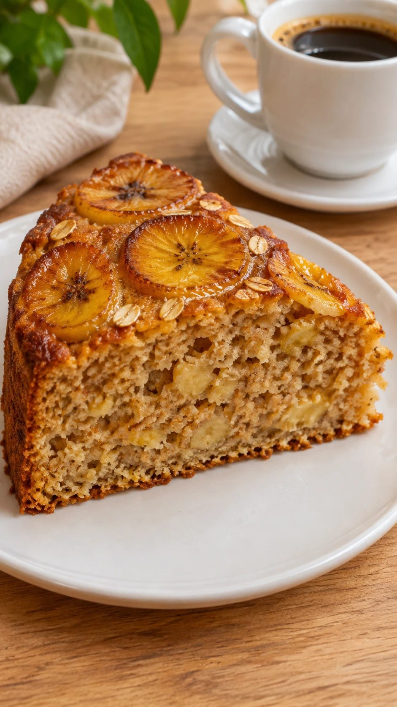

Receitas fresquinhas

Arroz soltinho: os 7 erros que deixam o arroz empapado
Como fazer arroz branco soltinho: a receita básica e os 7 erros mais comuns que deixam o arroz empapado, com a solução de cada um.
Strogonoff de frango de panela única
Strogonoff de frango cremoso feito em uma panela só, pronto em 25 minutos. Receita fácil com creme de leite, ketchup, mostarda e champignon, para servir com arroz e batata palha.

Bolo de banana de liquidificador com aveia
Bolo de banana de liquidificador com aveia, sem farinha de trigo: úmido, cheiroso e pronto em 45 minutos. Um jeito gostoso de aproveitar as bananas que passaram do ponto.
Nenhuma receita encontrada. Tente outro ingrediente ou veja todas as categorias.
Sobre o Melhores Receitas 126
Nascemos no Instagram @melhores.receitas126 para ajudar quem cozinha em casa todos os dias: receitas rápidas, doces afetivos e truques de cozinha que funcionam de verdade.
Todas as receitas são originais. As imagens são ilustrativas, criadas com inteligência artificial.